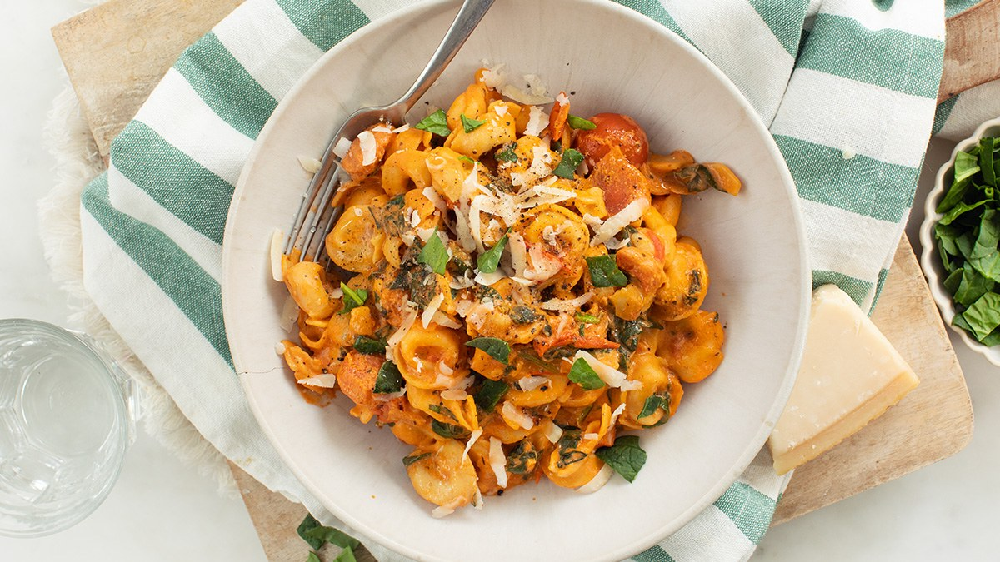

Recept
Tortellini met tomaten roomsaus
Tijdsduur: 20 min
Moeilijkheid: Makkelijk
Moeilijkheid: Makkelijk
Deze tortellini met tomaten roomsaus is een heerlijk en makkelijk gerecht dat snel op tafel kan.


Recept
Deze tortellini met tomaten roomsaus is een heerlijk en makkelijk gerecht dat snel op tafel kan.